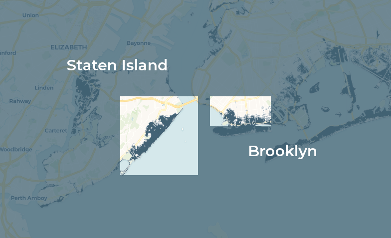

CP 101 Assignment 3Urban Impact of Hurricane Sandy in New York
Introduction
This website is for __City Planning 101 Assignment 3__ at UC Berkeley, by __Sam Afsharipour__ and __Heidi Dong__.
In late October 2012, Hurricane Sandy ravaged the U.S. eastern seaboard. Labeled a Category 3 at its peak and a Category 2 while it was off the U.S. coast, the damage left in its wake resulted in the fourth costliest hurricane in U.S. history, amounting to nearly $65 billion in damages.
On October 29, 2012, the storm made landfall in New York City, causing over $19 billion in damages and flooding 17% of the city and about 90,000 buildings, ultimately leaving 43 dead. The city still feels the storm’s effects today, with its weakened infrastructure and ongoing development of coastal resiliency plans aiming to mitigate damages of future storms. As destructive as Hurricane Sandy was, worsening climate change and sea level rise means that coastal regions like New York City will see more intense and frequent storms like this along with more large-scale flooding.
Map: Hurricane Sandy Inundation Zones in New York
Source: NYC Open Data
While the storm devastated the entire city, this project will focus on two regions on the map that witnessed major inundation from the storm: the southern coast of Brooklyn and the south-eastern coast of Staten Island.

Using data from the NYC Open Data Website, NYC Department of Finance, FEMA, and American Community Survey (ACS) and visualizations using Carto and Social Explorer, this project will address these two main questions:
* How did Hurricane Sandy impact housing prices in our regions of interest?
* Did Hurricane Sandy contribute to changes in the racial/ethnic or income makeup of the census tracts in our regions of interest?
We will also include briefer discussions about the accessibility of hurricane evacuation zones.